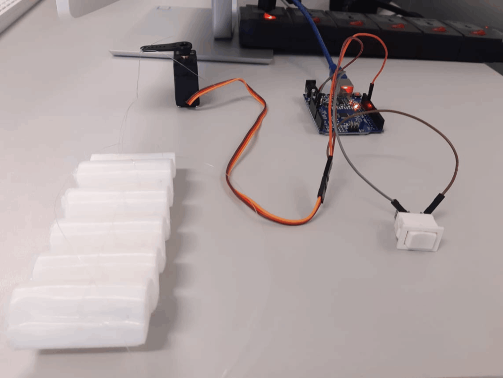
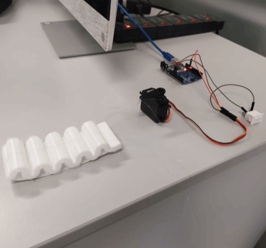
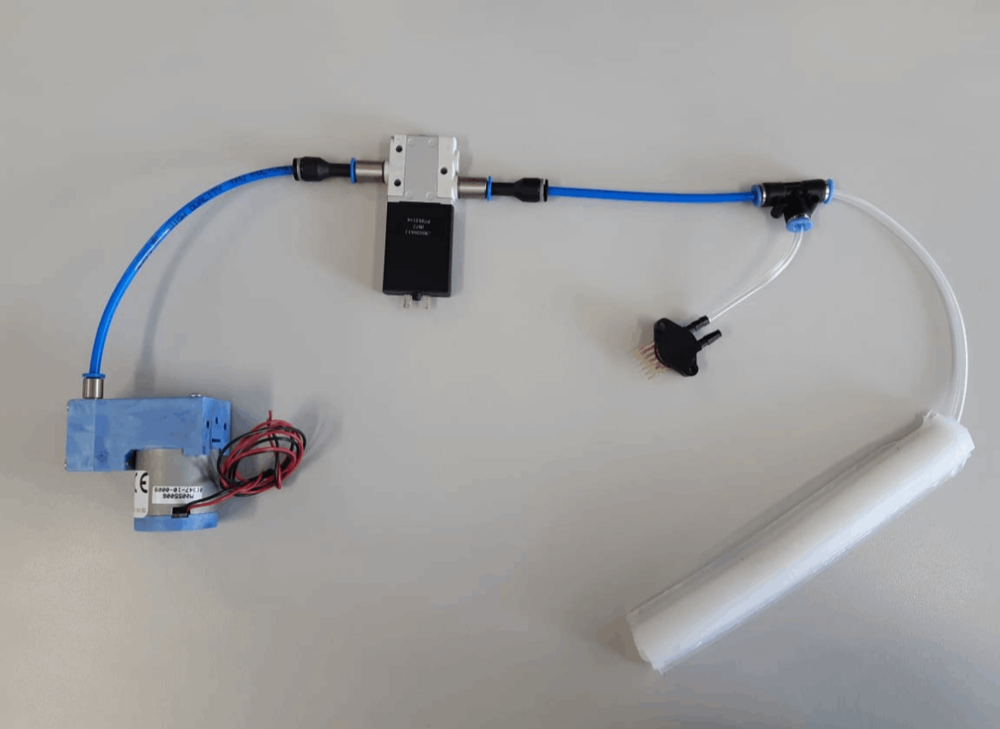
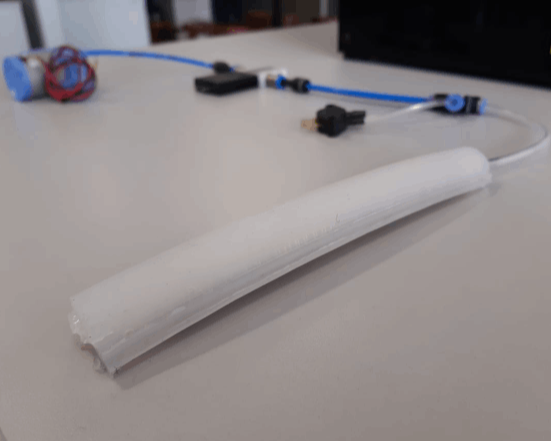
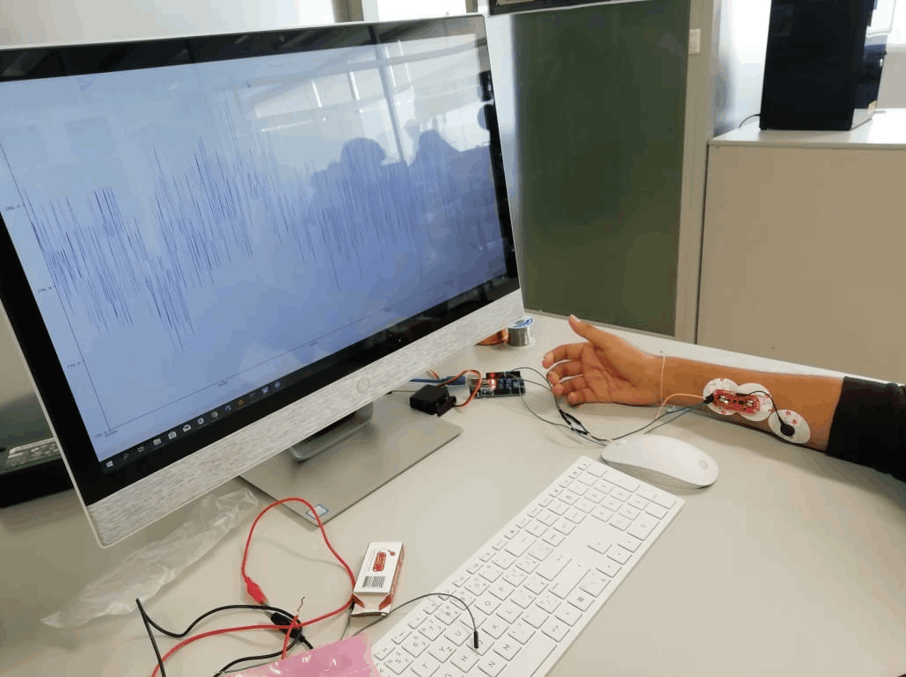
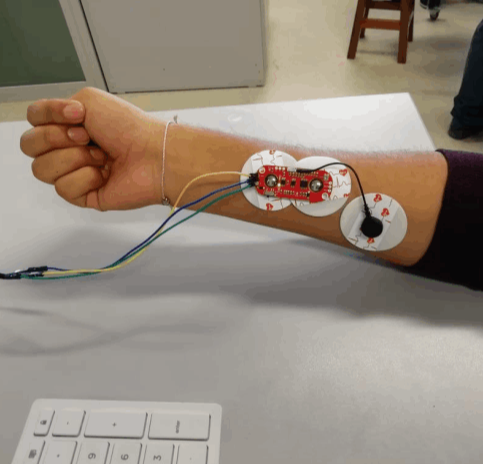
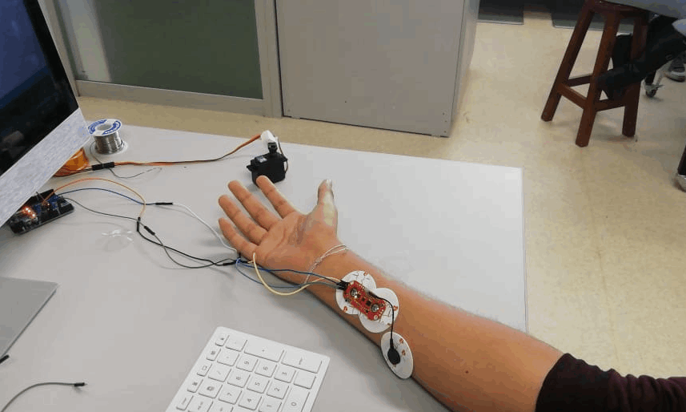
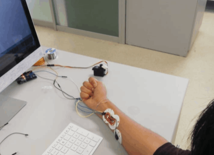

Sistema de extensión de la muñeca, el cual será accionado por un switch. Al ser activado el servomotor genera un movimiento radial, que al estar acoplado con una palanca, y esta con el actuador de la mano a través de hilos de nylon, producirá un movimiento de extensión a la mano.


CONEXIÓN DEL MÓDULO DE CODO, MICROBOMBA Y VÁLVULA
Sistema de flexión del codo. Este sistema se activa por una microbomba, la cual genera una presión neumática que será controlada por una válvula. Este sistema activa el actuador del codo y genera en el un movimiento de flexión.


SENSOR EMG
Esta conexión se da entre el arduino y el sensor EMG, el cual lee las señales mioeléctricas producidas en el brazo. Estas señales se convierten en valores numericos que servirán como rango de medición para la activación de los modulos de flexión y extensión, así como señal de inicio para la microbomba.


CONEXIÓN SENSOR EMG Y SERVOMOTOR
Esta conexión permite los movimientos de flexión y extensión de los módulos del codo y de la mano, respectivamente. Este sistema se activa al recibir las señales mioeléctricas captadas por el sensor EMG, el cual las interpreta y, a traves de un rango de valores, activa el servomotor que a su vez activa el módulo de la mano. Además, la señal mioeléctrica inicia el proceso de inflado del módulo del codo y de la mano activando, de manera simultanea, la microbomba.


SISTEMA DE GUANTE
Este módulo permitirá, mediante accesorios acondicionados, realizar algunas actividades diarias como, por ejemplo, cierta independencia al momento de alimentarse.